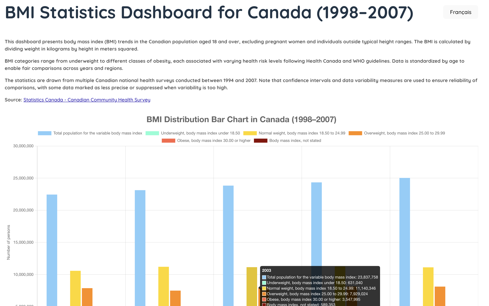

This dashboard visualizes BMI statistics for Canada from 1998 to 2007. It uses interactive bar and line charts to show trends across different BMI categories, with features that allow users to filter data and switch between English and French.
This interactive data visualization dashboard was created as part of a UI design course assignment. It presents Canada's historical BMI (Body Mass Index) data from 1998 to 2007 using an accessible, multilingual interface. The focus was on clarity, responsiveness, and user control, allowing users to explore BMI trends in a meaningful way.
Visit the live site